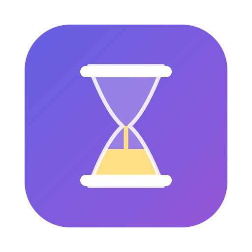

Smart QuitClosing a window was never quitting.
Close the last window, walk away, and a few minutes later the app quits itself — gracefully, and never while you're looking at it.
Notarised by Apple · macOS 14.2 or later · 1.3 MB
Smart QuitClose the last window, walk away, and a few minutes later the app quits itself — gracefully, and never while you're looking at it.
Notarised by Apple · macOS 14.2 or later · 1.3 MB